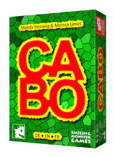

Zurück zur Übersicht
Cabo

Typ
Kartentauschspiel
Beschreibung
In Cabo will die eigene Kartenhand optimiert werden, um bei Rundenende mit dem niedrigsten Gesamtwert
zu gewinnen. Dabei sind allerdings alle Karten verdeckt - auch die eigenen! Nach und nach lernt man mehr
über die eigenen und gegnerischen Karten, zieht, spickt, stiehlt, tauscht und ruft schließlich das Rundenende
aus - in der Hoffung auch tatsächlich das niedrigste Blatt zu haben.
Für
- Glückspilze
- Ärgerlinge
- Ungeduldige
- Großhirne
Schnell erklärt
- Einfach eine Demo-Runde mit nur 2 Spielern spielen.
- Dabei alle Sonderaktionen zeigen und früh "Cabo" rufen!
Zurück zur Übersicht